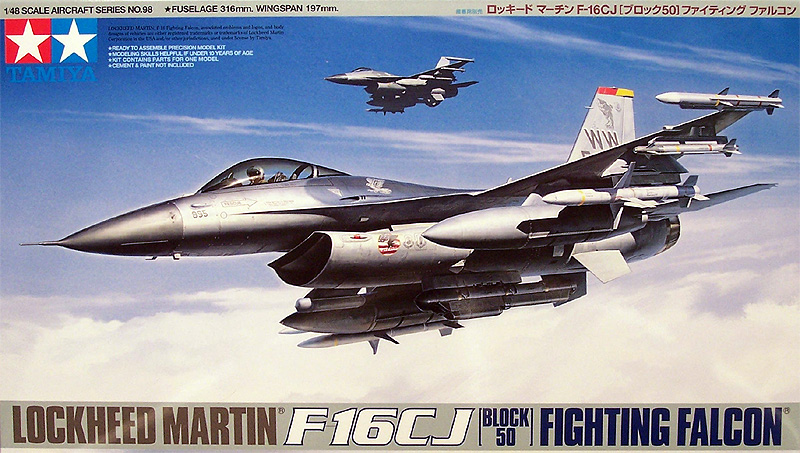
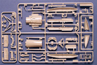
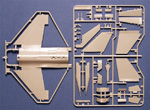
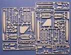
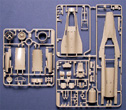
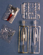
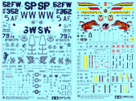

{kind=link}
{kind=link}
{kind=link}
{kind=link}
{kind=link}
{kind=link}


Tamiya 1/48 Lockheed Martin F-16 C/J Block 50 �Viper�

Kit #61098
MSRP $51.00
Images and text Copyright � 2007 by Matt Swan
Developmental Background
The idea that was to become the F-16 Fighting Falcon (Viper to its crews) began in the 1960s when the U.S. Air Force and Navy both concluded that future "fighters" would be designed primarily for long range, high speed, and equipped with extremely large radar systems in order to detect opposing fighters at long range. It had been recognized that aerial combat invariably closed to short ranges where air-combat maneuverability and short range air-air weapons became critical so the reliance on missile armed only aircraft was unrealistic and some kind of weapon was needed that allowed the pilot to reach out and touch someone up close and personal. While there were some heavy twin engined fighter/bombers in use and under development experiences in Viet Nam had shown that a high-low fighter matrix was still needed. A group of individuals influenced by Colonel John Boyd known as the fighter mafia championed the development of a lightweight, high maneuverability fighter program which ultimately produced the F-16 in 1976.
The F-16 is a single seat fighter with a Vulcan M61 cannon mounted in the left wing root. It is designed to carry two AIM-9 Sidewinder or AIM-120 AMRAAM missiles on the wing tip mounts and a variety of other loads on the interior wing hardpoints. It is an economical workhorse of an aircraft that sets the pilot high in a bubble canopy with a wide filed of view. The pilot�s seat is mounted at an unusual 30 degree recline compared to other fighter aircraft. This is supposedly to allow the pilot to withstand high G maneuvers better but is also theorized as being done simply to fit the seat inside the cockpit. The bubble canopy is free of any framing which improves the pilot�s field of view but to allow for proper protection it is so thick that ejection through the canopy is not possible as with other fighter aircraft. Another unusual feature of the Viper is that the joy stick is side mounted rather than between the pilot�s legs. This was done to allow for better control during high G maneuvers. It is also the first fly by wire fighter. This presented some issues initially in that the joy stick did not move but only sensed pressure inputs from the pilot. This caused so much difficulty for crews changing over that the stick was redesigned to include a quarter inch of movement.
The Viper has seen combat in many conflicts, mostly in the Middle East and is in service with a wide variety of air forces. The F-16 is not only capable as an air superiority fighter but is more than capable in the ground attack mode. Over 4000 examples of F-16s have been produced for at least 23 other air forces besides the United States. F-16 models are denoted by sequential block numbers to denote significant upgrades. The block 50 CJ and DJ were produced in 1990 and delivered in 1991. This block was equipped with GPS/INS positioning and guidance systems, could carry the AGM-88 HARM missile as well as JDAM, JSOW, and WCMD. Block 50 aircraft were powered by the F110-GE-129 engine that was developed in 1997 and tested in the F-15E program.
The Kit
Before I launch into a review of this kit let me make a couple things clear. I am normally a prop guy and rarely play with jets. I have not seen the 1/32 scale Tamiya F-16 kit so cannot make any comparisons to that kit � I�ll be taking this model on its own merits only. With that said let�s take a look inside the box.
This is the first F-16C/J 1/48 model kit that has been designed from the vary beginning to be a C/J rather than an A kit being modified to look like a C/J. The box is of average size for a 1/48 kit and is completely packed with sprues of parts. One of the first things I noticed was the slightly light color of the plastic compared to the standard Tamiya kit. The parts are all clean and free of flash, no sink marks or injector pins are evident on the kit. Surface detail consists of finely engraved panel lines and subtle rivet detail. Sprue gates are small and placed well on the parts for easy clean-up. The primary fuselage is formed from three large parts with the upper half having a joint just behind the cockpit. At first this gave me pause as a possible place for a large step or seam but I was pleasantly surprised to see that the parts fit together very well and once a little Tenax 7R was applied to the interior side no other work was needed.
The kit utilizes several pin/poly cap connections where the tail fin can be removed, the elevators are movable and the center line hard point can have the fuel tanks changed after construction. The inner wing hard points also use poly caps to allow for load-out changes after construction. External stores include 370 gallon wing tanks, 300 gallon tank, AIM-9 and AIM-120 missiles, HARM targeting system pod and ECM pod. Wing leading edge flaps are molded in place which for most modelers will not present a problem as they are normally closed unless the aircraft is taking off or landing. The kit does not include an engine which does not seem to be a problem for me. It also does not include a boarding ladder which I would have liked to see. I�m sure that if you care to open this thing up the aftermarket will be ready to accommodate you shortly. A seated pilot figure is included with two optional helmets. The cockpit and landing gear bays are well detailed. The intake cone is a four piece assembly that does leave a few seams in hard to reach places but then they are not very easy to see once the model is assembled.
The kit includes two sets of clear parts, one set done in completely clear plastic and the other in tinted plastic to replicate the gold tinted bubble. The primary canopy does have a very fine mold separation seam down the middle but it is easily taken care of with some fine sanding film and an application of Future floor polish. Also included in the clear parts are a variety of lenses and marker lights. Overall the kit displays a good level of accuracy keeping in mind that it is a model and sometimes sacrifices have to be made when scaling things down. Taking a full inventory of the kit we have two hundred fifty six parts done in light gray plastic on five sprues plus twenty four clear parts along with eight poly caps and eight steel pins and screws for a total parts count of two hundred ninety six parts in the box. You also get a little tiny screw driver.





You may click on the small images above to view larger pictures.
Decals and Instructions
Kit instructions come in two parts; the first as a large format booklet of twelve pages that opens with a historical background of the aircraft in four languages. Following this is a fairly comprehensive paint code chart giving the colors by Tamiya paint code and color name. No FS numbers are given. From here we have thirty one exploded view assembly steps that include plenty of color call-outs and part names. 
The last page of this booklet gives some basic painting instructions as text and some decal application instructions. The second part of the instruction package is a large fold-out with three-views of the aircraft printed on both sides giving painting diagrams and decal placement instructions. Also here we have painting and decaling instructions for the munitions.
Two sheets of decals come with the kit giving plenty of marking to do any one of three aircraft. The decals offer excellent image sharpness and print registry. Colors are vibrant and they appear to be properly thin. I think the attached image of the decals really says it all for this kit � very nice.
Conclusions
If you want to build a block 50 Viper in 1/48 this kit is for you. It offers a very good scale representation of the subject; the parts are well engineered and fit together very well. As is expected with any Tamiya kits there are no flash or sink marks. Aficionados of the F-16 are sure to find many minor things to rag at like the absence of a full engine or separate leading edge flaps or even that the munitions provided are not o0f the best selection but seriously folks, no kit is ever going to give you 100% of the little things you might want unless its one of those limited run $160.00 Eduard sets. For the price this kit does a nice job and I would recommend it to any modeler regardless of your level of knowledge of the F-16 block 50 aircraft. Aftermarket wise there is little out there at this time but there are many things in the works like new decals from Two Bobs and from After Burner Decals. It should not be long before we see detail sets that will offer us the exposed engine details, gun bay details and radar details. For now I am happy building this right from the box.